Tus suscripciones de YouTube, por fin ordenadas
SortTube reparte tus canales en grupos —Noticias, Música, Aprender…— y da a cada grupo su propio feed, dentro del propio YouTube.
Gratis · Funciona en Chrome, Edge y Brave · Sin cuentas ni rastreo
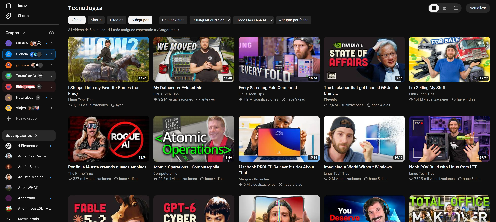
Funciones
Todo lo que sigues, en orden
El feed de Suscripciones de YouTube lo mezcla todo. Con SortTube eliges qué ver y cuándo.
Un feed para cada grupo
Solo esos canales, lo más nuevo primero: vídeos, Shorts, directos y estrenos. En cuadrícula, en lista o compacto.
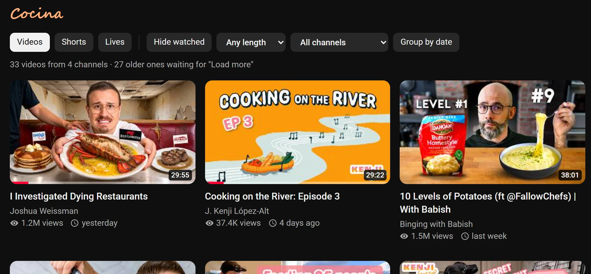
Grupos en la barra lateral
Justo encima de Suscripciones, con los avatares de sus canales y un punto azul cuando hay algo nuevo.
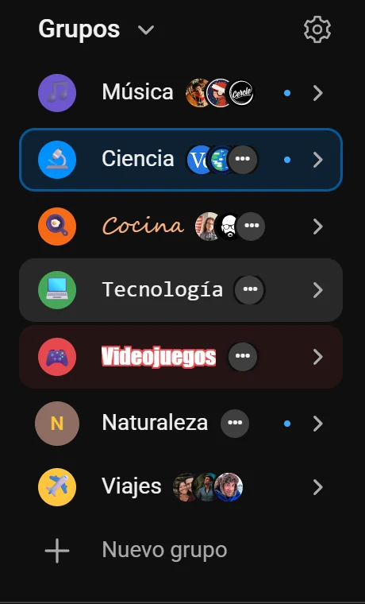
Ordena en minutos
Todas tus suscripciones en una lista: un clic mete un canal en un grupo. Selecciona varios a la vez para ir más rápido.
Haz limpieza
Un semáforo de actividad muestra qué canales se han parado. Desuscríbete de varios a la vez, o vuelve a suscribirte.
Tu progreso, de YouTube
Barras rojas de progreso y «visto» sacados de tu historial de YouTube. Oculta lo que ya has visto.
Vista previa realPRO
Pasa el ratón por una miniatura y mira el vídeo de verdad, con sonido, volumen y barra de tiempo. Gratis, pruebas cinco segundos.
En cualquier parte
Añade canales desde cualquier sitio
El botón SortTube está junto a «Suscribirse»: marca los grupos de un canal sin salir de lo que estás viendo. O, para muchos a la vez, usa el organizador, justo debajo.
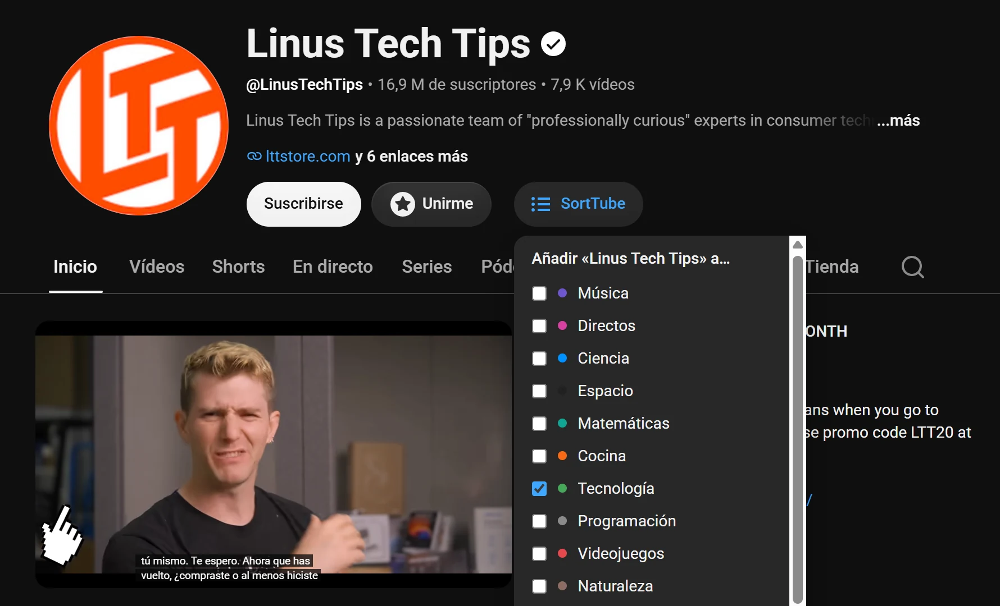
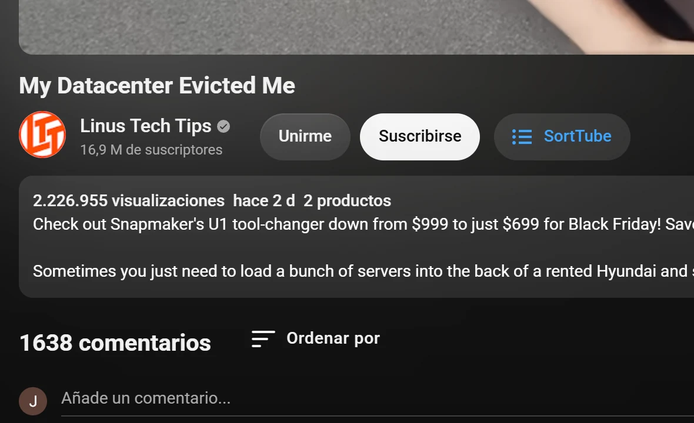
Organizador
¿Cientos de canales? Unos minutos.
Todas tus suscripciones en un sitio, listas para ordenar.
- Un clic mete un canal en un grupo; otro clic lo saca.
- Selecciona varios (Mayús para un rango) y añádelos, sácalos o desuscríbete de golpe.
- Semáforo: activo, bajando el ritmo o inactivo. Ordena por los menos activos para saber qué dejar.
- Sin grupo: muestra solo los canales que aún no has ordenado.
- Sin suscribirte: un grupo puede tener canales a los que no estás suscrito en YouTube. También salen aquí, con su botón «Suscribirse» por si cambias de idea.
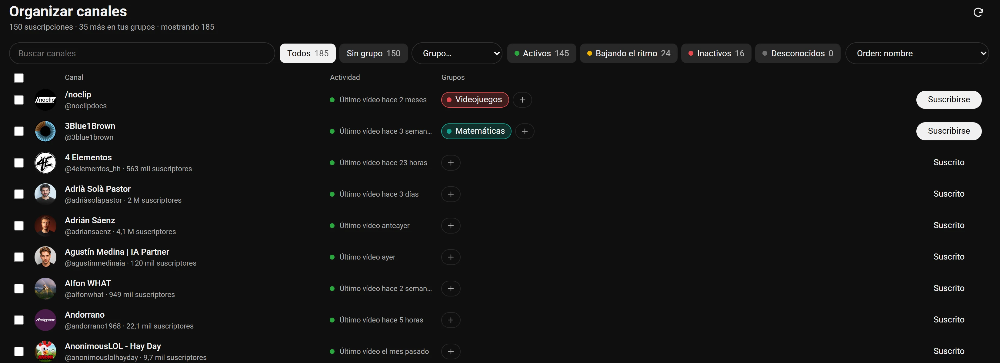
Feed
Cada grupo, como quieras verlo
Cada grupo tiene su propio feed, con lo más nuevo primero, y tú eliges cómo se ve.
- Cuadrícula, lista o compacta. La lista muestra el comienzo de cada descripción.
- Vídeos, Shorts y directos: activa o quita cada uno.
- Estrenos y directos programados, con la hora a la que empiezan.
- Ver más tarde y cola desde cada vídeo.
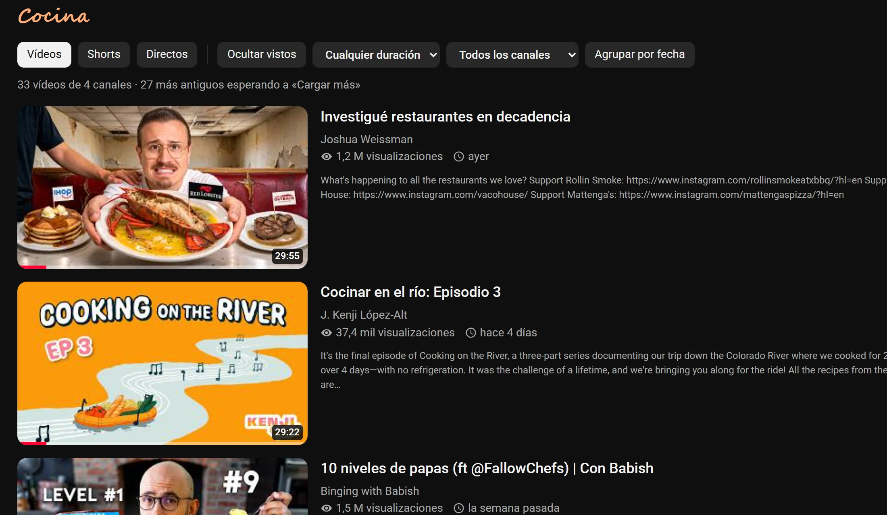
Barra lateral
Tus grupos, siempre a mano
Justo encima de Suscripciones en la barra lateral de YouTube, y a un paso del ratón cuando la barra es estrecha.
- Un punto azul marca los grupos con vídeos nuevos.
- Despliega un grupo para ver sus canales.
- Clic derecho en un grupo para renombrarlo, personalizarlo o borrarlo. Arrástralo para reordenar.
- Con la barra estrecha, pasa el ratón por «Grupos» para abrirlos.
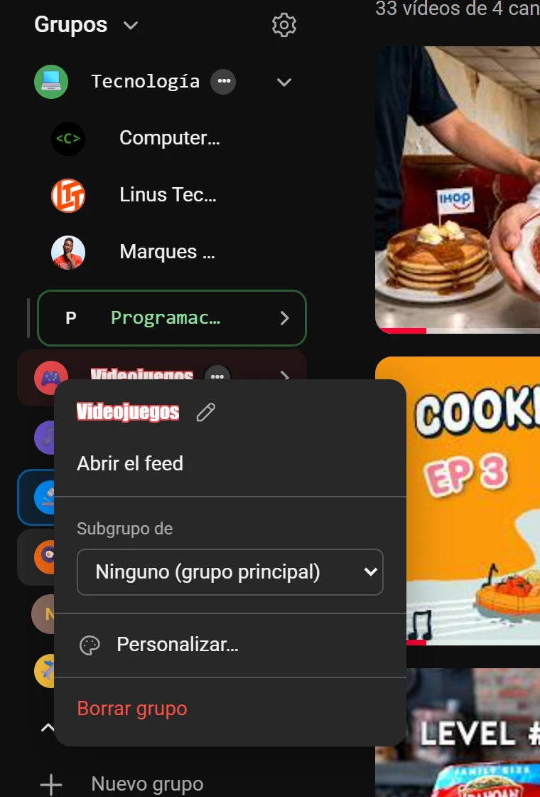
Personalizar
Cada grupo, a tu maneraPRO
Un aspecto que reconoces de un vistazo, en la barra lateral y en la cabecera de su feed.
- Icono: un color, la inicial del grupo o un emoji, y un aro alrededor.
- Nombre: su color, cinco fuentes y un contorno.
- Tarjeta: un fondo y un borde, tan intensos o suaves como quieras.
- Pruébalo todo gratis: para guardar los estilos hace falta Pro.
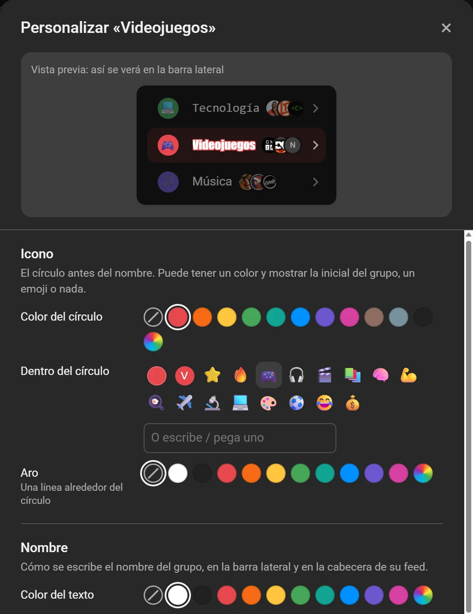
Subgrupos
Grupos dentro de gruposPRO
Idiomas → Inglés, Chino. Cocina → Postres, Vegana. Los temas grandes quedan ordenados sin perder la vista de conjunto.
- Arrastra un grupo sobre otro para meterlo dentro, y fuera para sacarlo.
- El feed del grupo padre puede mostrar también los vídeos de sus subgrupos, o solo los suyos.
- Pliégalos y despliégalos en la barra lateral.
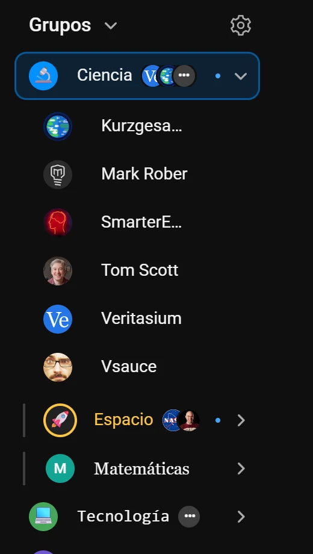
A tu manera
Ajustes que no estorban
El botón de la extensión abre un panel de ajustes: idioma, qué muestra la barra lateral, cuándo un vídeo cuenta como visto, copias de seguridad y Pro.
- 15 idiomas, y los títulos de los vídeos como los muestra YouTube en el tuyo.
- Copias de seguridad de tus grupos en un pequeño archivo que guardas tú.
- Funciona con los temas claro y oscuro de YouTube y con la barra lateral estrecha.
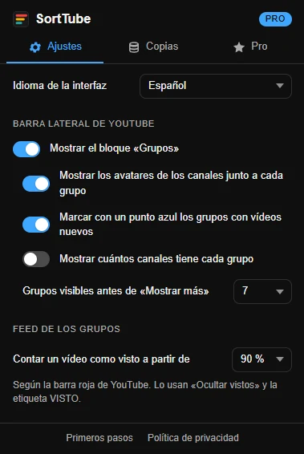
Pro
Mira el vídeo sin abrirlo
Con Pro, al pasar el ratón por una miniatura se reproduce el vídeo de verdad, no solo unos segundos de animación.
- Con sonido, volumen y barra de tiempo para saltar a cualquier punto.
- Filtros: oculta lo que ya has visto, filtra por duración o canal, agrupa por fecha.
- Personaliza cada grupo: colores, emojis, fuentes y fondos.
- Subgrupos, y arrastrar canales de un grupo a otro.
Privacidad
Sin servidores. Sin rastreo.
Se queda contigo
Tus grupos viven en tu navegador y se sincronizan con tu cuenta de Chrome. A nosotros no nos llega nada: no tenemos servidores.
- Sin cuentas que crear
- Copias en un archivo que guardas tú
Solo YouTube
SortTube habla con YouTube, igual que la página que ya tienes abierta. Tu contraseña ni se le acerca.
- Tu propia sesión de YouTube
- Nunca te pide la contraseña
Sin anuncios ni analíticas
No se vende nada ni se rastrea nada. Si compras Pro, Polar comprueba tu licencia.
- Cero rastreadores
- Polar solo para Pro
Precios
Gratis para empezar. Pro cuando quieras más.
Gratis
Para siempre
- Grupos ilimitados
- Grupos en la barra lateral de YouTube
- Un feed para cada grupo: cuadrícula, lista o compacto
- Vídeos, Shorts, directos y estrenos
- El organizador, el semáforo de actividad y desuscribirse en bloque
- Ver más tarde, cola y barras de progreso
- Vista previa de cinco segundos al pasar el ratón
- Copias de seguridad
Pro Precio de lanzamiento
Pagas una vez y es tuyo. Sin suscripción. IVA incluido.
- Todo lo de la versión gratuita
- Todas las actualizaciones futuras
- Vista previa con el vídeo real y con sonido
- Filtros: ocultar vistos, duración, canal, agrupar por fecha
- Personalizar grupos: colores, emojis, fuentes y fondos
- Subgrupos
- Arrastrar canales entre grupos
Instala SortTube primero: después de comprar, copias tu clave de licencia del portal de cliente de Polar y la pegas en SortTube → Pro.
Preguntas frecuentes
¿SortTube es gratis?
Sí. La versión gratuita tiene todo lo necesario para ordenar y ver tus suscripciones, con todos los grupos que quieras. Pro es opcional.
¿Tengo que darte mi cuenta de Google?
No. SortTube usa YouTube en tu propio navegador, con la sesión que ya tienes. Nunca ve tu contraseña y no tiene servidores propios.
¿En qué navegadores funciona?
En Chrome y en los navegadores que instalan extensiones de la Chrome Web Store: Edge, Brave, Opera, Vivaldi…
¿Tengo que estar suscrito a un canal para meterlo en un grupo?
No. Añade cualquier canal desde su botón SortTube y sus vídeos saldrán en el feed del grupo, sin notificaciones y sin llenar tus suscripciones ni la portada de YouTube. Y si te desuscribes de un canal, sigue en sus grupos.
¿Puedo probar los estilos Pro antes de comprar?
Sí. La ventana Personalizar te deja probar cada color, fuente y fondo en tus propios grupos; solo para guardarlos hace falta Pro.
¿Cómo activo Pro?
Tras la compra, entra en el portal de cliente de Polar con el correo con el que pagaste y copia tu clave de licencia. Luego pulsa el botón de SortTube en la barra del navegador → Pro → Introducir mi clave de licencia.
¿Pro es una suscripción?
No. Pagas 9,99 € una vez y Pro es tuyo, con todas las actualizaciones futuras. No se renueva ni se vuelve a cobrar nada.
¿Y si SortTube deja de actualizarse?
Si algún día dejo de mantener SortTube, publicaré una última versión con Pro gratis para todos, para que nadie pierda lo que pagó.
¿Pierdo mis grupos si la desinstalo?
Descarga antes una copia de seguridad (ajustes de SortTube → Copias) e impórtala después. Con la sincronización de Chrome, además, vuelven solos en tus otros ordenadores.
¿SortTube es de YouTube?
No. SortTube es una extensión independiente, sin relación con YouTube ni con Google.